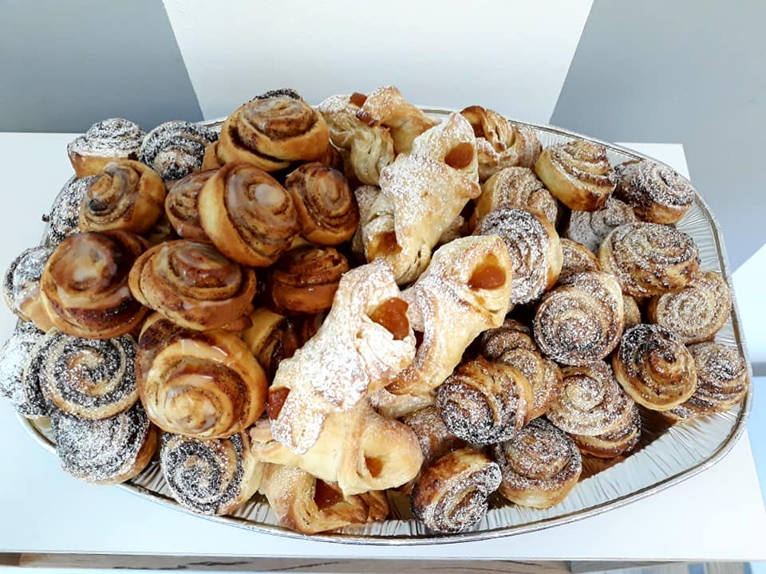
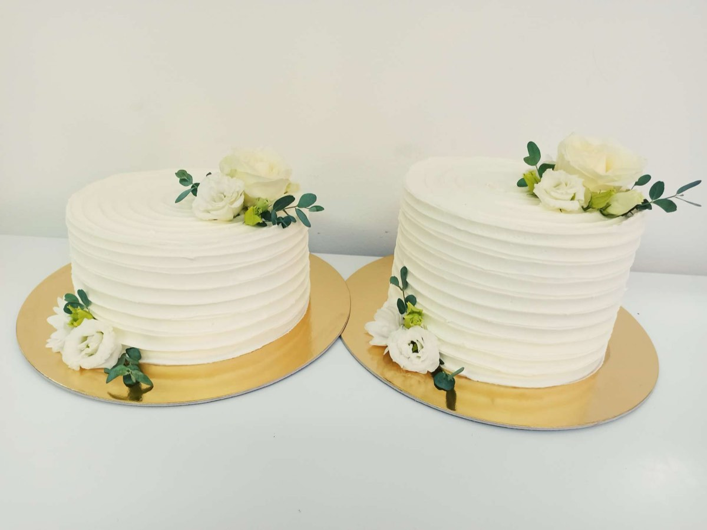

Naša priča
Kuća za sve što je domaće.
Industrijska proizvodnja pekarskih i slastičarskih proizvoda svakim danom raste, a ljudi se sve više vraćaju domaćim, tradicionalnim proizvodima. Mnogi su nam govorili kako za svatove, sahrane, rođendane i domjenke nemaju gdje naručiti sitne domaće proizvode poput kiflica, salenjaka i pogačica – i tako je nastala Kuća peciva.
Znanje o tehnologiji stekli smo studirajući na Prehrambeno-tehnološkom fakultetu, a iskustvo radom u obrtu Blaža u Našicama, koji se bavi upravo ovakvim proizvodima, te pečenjem kolača za rodbinu i prijatelje.
„Iz Kuće peciva ovoga Božića izišli brojni orašari i oko 150 kilograma božićnih kolača”Glas Slavonije, prosinac 2020.